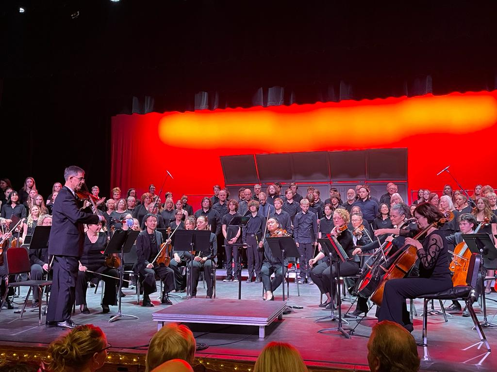
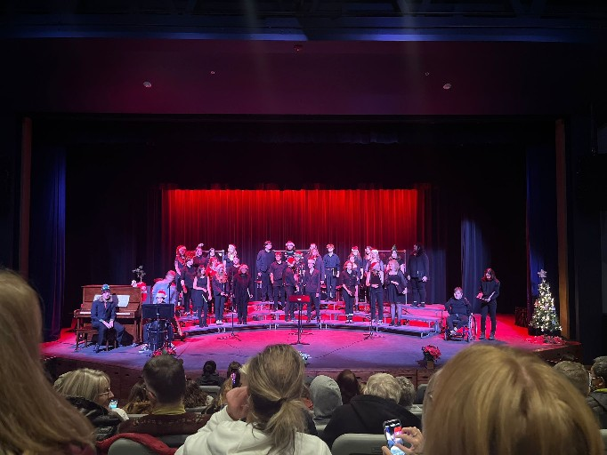
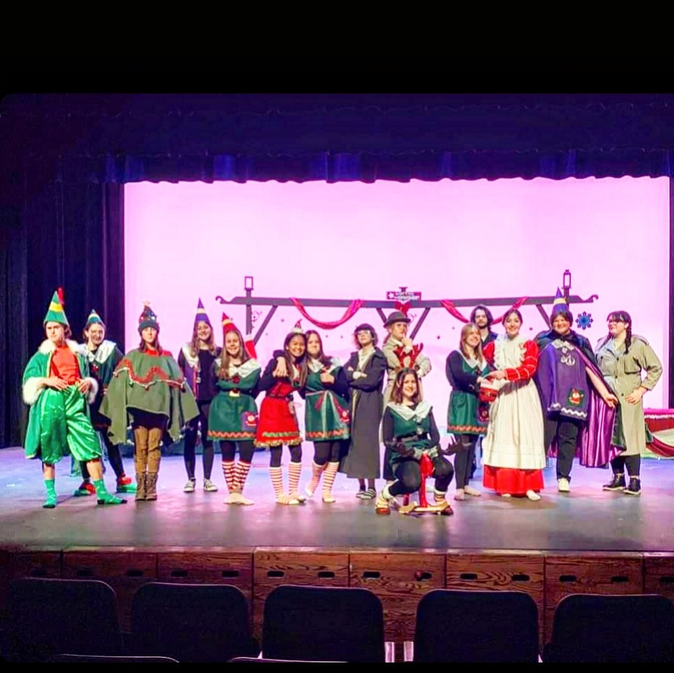
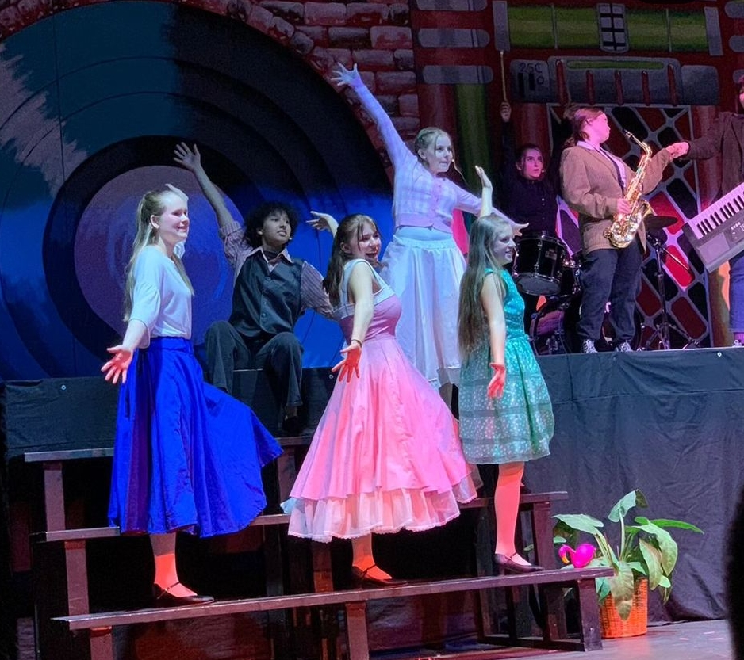

Die Schule, die ich besuchte hiess Mount Baker Secondary School. Es war eine zielich kleine Schule, die jeodoch sehr vieles anbot an Fächern und Freifächern. Man konnte die eigenen Fächer komplett frei wählen. Ich zum Beispiel hatte ein ganzes Jahr lange keine Mathematik, da ich nicht wollte oder musste. Diese Fächer hier hatte ich jedoch:
Der Ort, wo ich wohnte, hiess Cranbrook. Das ist im Distrikt British Columbia. Es ist eine kleine Stadt mit circa. 20'000 Einwohnern. Mein Haus war zu Fuss vierzig Minuten von der Schule entfernt. Da mich niemand fahren konnte, nahm ich jeden Tag den Bus zur Schule, den typischen gelben Schulbus, wie aus den Filmen. Im Winter wurde es bis minus zwanzig Grad kalt und im Sommer bis zu fünfundreissig Grad heiss. Also ziemliche Temoeraturunterschiede.
Etwa dreissig Minuten per Auto war ein super tolles Skigebiet namens Kimberley. Ich hatte da die Saisonkarte gelöst und war den ganzen Winter lang skifahren. Es war richtig toll und das Skigebiet hatte wirklich eine Piste für alle Niveaus. Durch das gemeinsame Skifahren machte ich auch sehr viele Freunde.
Das Angebot an Freifächern war extrem gross. Ich wählte Theater und Chor. Mit dem Theater führten wir ein selbstgeschiebenes Weihnachtstheater auf und daraufhin im Frühling das Musical Grease. Mit dem Chor hatten wir mehrere Konzerte und im Mai ein grosses Stück namens Sunrise Mass. Das war ein definitives Highlight.
   